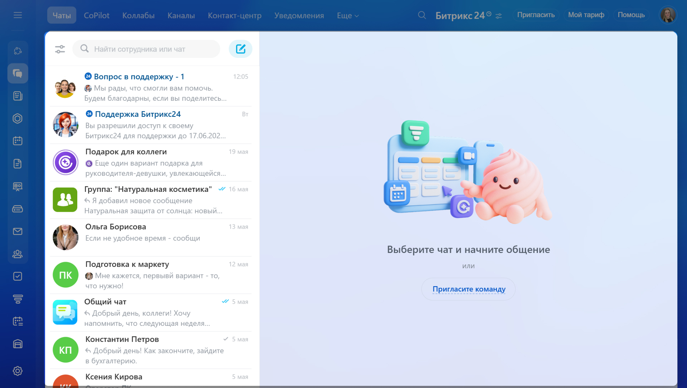
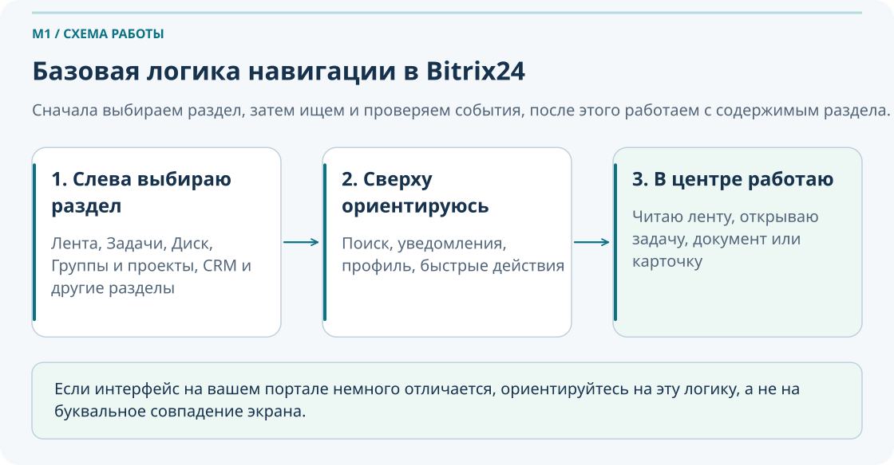
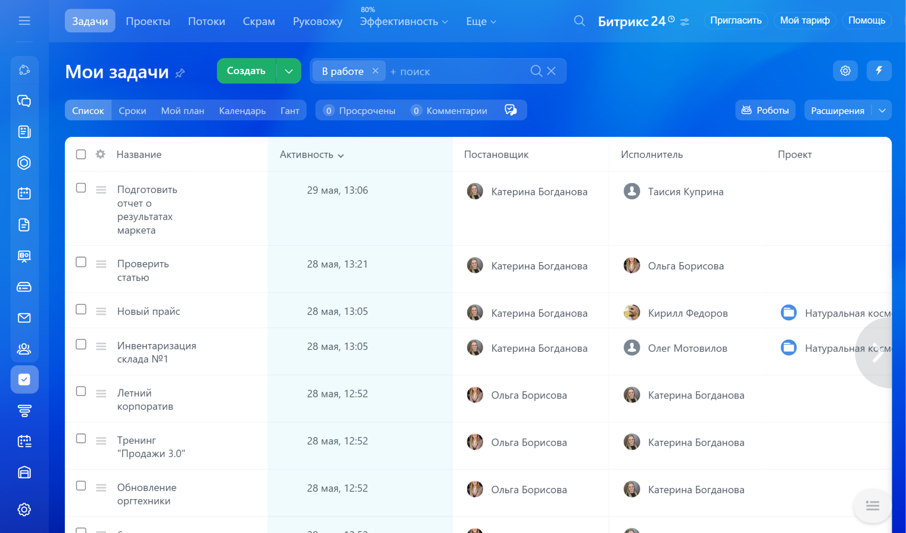
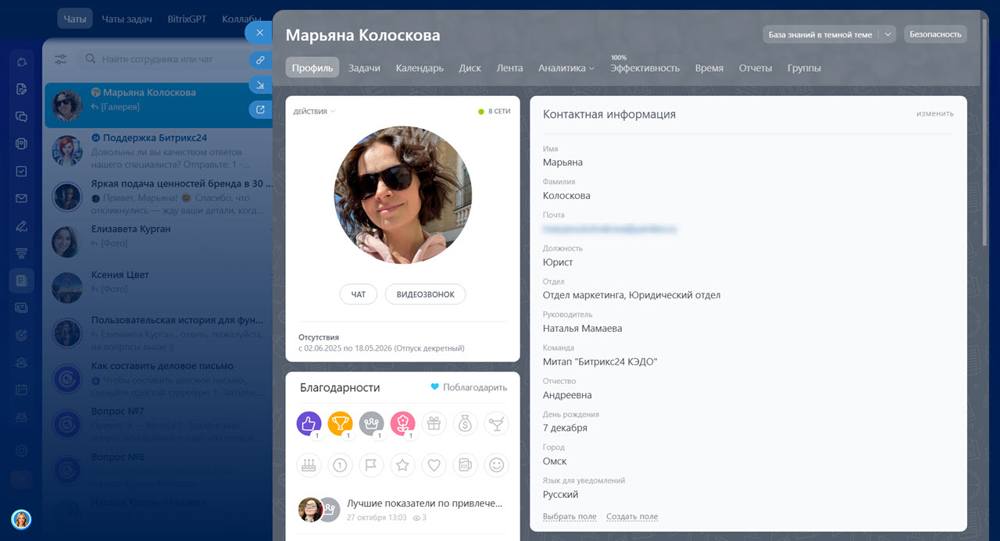
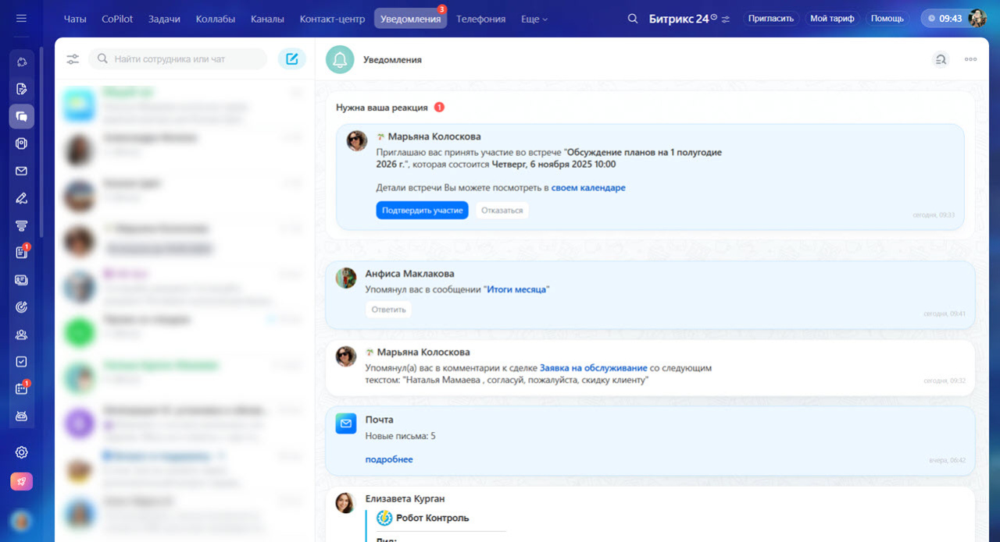
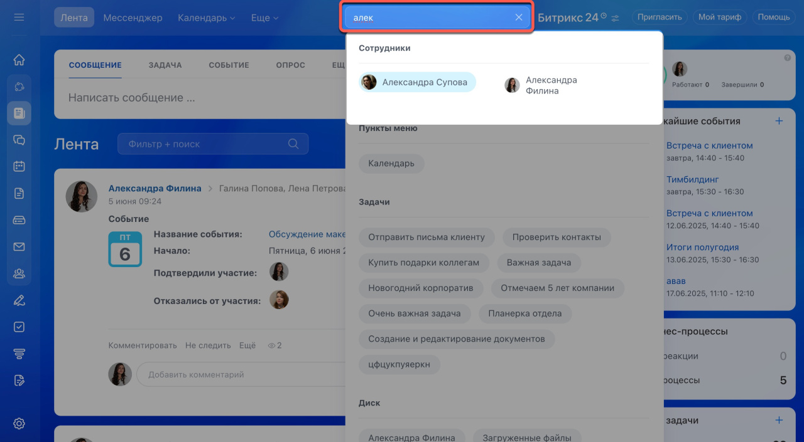

Знакомство с Битрикс24
и личное рабочее место
Этот модуль не пытается научить сотрудника всем функциям портала сразу. Его задача практичнее: помочь уверенно войти в Битрикс24, разобраться в интерфейсе, настроить свой профиль и уведомления, найти людей, задачи и документы, а затем без лишнего стресса перейти к следующим темам курса.
Что важно понять в M1
- После первого модуля не требуется знать весь Битрикс24.
- Нужно уметь ориентироваться: где искать людей, задачи, файлы и рабочие разделы.
- Нужно подготовить своё личное рабочее место: профиль, уведомления, безопасный вход, мобильный доступ.
- Нужно понять базовую логику: договорённости фиксируются не только в чате, а в задачах, комментариях и документах.
Результат прохождения
- Сотрудник понимает, зачем компании нужен единый портал.
- Сотрудник открывает основные разделы без подсказок.
- Сотрудник может проверить и обновить свой профиль.
- Сотрудник умеет пользоваться поиском до того, как писать коллегам.
- Сотрудник знает базовые правила цифровой безопасности в портале.
1. Введение
Для кого модуль
Для новых сотрудников и пользователей, которые только начинают работать в корпоративном портале или раньше использовали его фрагментарно.
Чему научится сотрудник
Открывать нужные разделы, находить коллег и документы, настраивать личное рабочее место и понимать, где фиксировать рабочие договорённости.
Что не требуется на этом этапе
Не нужно знать CRM, автоматизацию, интеграции, сложные отчёты и административные настройки. Эти темы будут позже.
M1 нужен не для того, чтобы сотрудник «посмотрел интерфейс», а для того, чтобы он смог начать работать в цифровой среде без потери времени, лишних вопросов и случайных ошибок.
Паспорт модуля
Место в курсе
M1 открывает курс и готовит сотрудника к темам коммуникаций, рабочих групп, задач, проектов, документов, отчетности, CRM, автоматизации и интеграций.
Входной уровень
Специальная подготовка не требуется. Достаточно уметь работать с браузером, почтой и базовыми корпоративными сервисами.
Целевая аудитория
Новые сотрудники, пользователи, которые раньше работали в портале фрагментарно, и сотрудники, которым нужно привести личное рабочее место в порядок.
Итоговый результат
После M1 сотрудник умеет войти в портал, ориентироваться в основных разделах, проверить профиль, настроить уведомления, безопасно завершить работу и найти нужную информацию.
Сотрудник не обязан знать все возможности Битрикс24, но должен уверенно выполнить первый рабочий маршрут: войти, найти коллегу или файл, понять, где фиксируется договоренность, и подготовить личное рабочее место к ежедневной работе.
2. Зачем компании Битрикс24
Что это: Битрикс24 — единое рабочее пространство, где в одном месте собираются люди, задачи, обсуждения, документы и связанные с ними действия.
Зачем это сотруднику: вместо поиска по почте, чатам, локальным папкам и телефонным контактам сотрудник получает одну точку входа в повседневную работу.
Как это применяется: сотрудник получает поручение, фиксирует его в задаче, находит шаблон документа на диске, упоминает коллегу в комментарии и видит статус исполнения в одном процессе.
Что будет, если этим не пользоваться: договорённости теряются в чатах, версия файла неясна, сотрудник зависит от того, «кто помнит, где что лежит», а контроль сроков превращается в ручной обзвон или переписку.
Связь со следующими модулями: логика M1 становится фундаментом для модулей про коммуникации, задачи, группы, документы и поиск информации в корпоративной среде.
Что меняется после перехода в портал
| До | После |
|---|---|
| Поручение «на словах» или в мессенджере | Задача с ответственным, сроком и историей |
| Файлы в личных папках и пересланных письмах | Документы в общей рабочей среде |
| Поиск коллеги через знакомых или телефонную книгу | Поиск по профилям и структуре компании |
| Повторные вопросы «где это лежит?» | Самостоятельный поиск по задачам, людям и файлам |
Чат, задача, файл и база знаний — не одно и то же
| Инструмент | Когда использовать |
|---|---|
| Чат | Быстро обсудить, уточнить, договориться о следующем шаге |
| Задача | Зафиксировать ответственность, срок, комментарии и результат |
| Файл | Хранить рабочий документ, шаблон или итоговый материал |
| База знаний | Хранить правило, инструкцию или устойчивый порядок действий |

Ситуация: договорённость о сроке подготовки акта была в чате, но через два дня никто не помнит точную формулировку и кто должен был начать работу.
Что сделать:
- После обсуждения перевести договорённость в задачу.
- Указать ответственного, срок и ожидаемый результат.
- Прикрепить документ или ссылку на шаблон, если он уже есть.
- Оставить в задаче комментарий, если условия изменятся.
Результат: договорённость не теряется, её видно всем участникам, а статус можно проверить без повторных сообщений.
Запишите три рабочие проблемы, которые у вас уже возникают без единой рабочей среды: потерянные сообщения, разные версии файлов, зависимость от коллег при поиске информации.
Определите, какая из ваших текущих рабочих договорённостей должна фиксироваться в задаче, а не оставаться только в чате.
Объясните своими словами, как единое рабочее пространство снижает зависимость от памяти коллег и ускоряет ввод нового сотрудника в работу.
Раздел освоен, если вы можете объяснить, почему важную договорённость лучше довести до задачи, а не оставлять только в переписке.
3. Первое знакомство с интерфейсом
Короткое объяснение: у интерфейса Битрикс24 есть базовая логика: слева выбираем инструмент, сверху ищем и отслеживаем уведомления, в центре выполняем работу.
Рабочая польза: сотрудник быстрее ориентируется в портале и не путает «где искать», «где читать» и «где выполнять действие».
Слева выбираю инструмент → сверху ищу, проверяю уведомления и профиль → в центре работаю с выбранным разделом.

| Элемент интерфейса | Зачем нужен | Когда используется |
|---|---|---|
| Левое меню | Быстрый переход между инструментами | Когда нужно открыть ленту, задачи, проекты, диск, сотрудников |
| Верхняя панель | Поиск, уведомления, профиль, быстрые действия | Когда нужно найти объект, проверить входящие события или открыть личные настройки |
| Рабочая область | Основное место работы с содержимым выбранного раздела | Когда вы читаете ленту, просматриваете задачи или работаете с документами |
| Поиск | Быстро найти сотрудника, задачу, файл, группу или раздел | Когда вы не хотите тратить время на ручной просмотр списков |
| Уведомления | Понять, что изменилось и что требует реакции | Когда пришёл комментарий, новая задача, упоминание или согласование |
| Профиль | Управлять своими данными и настройками | Когда нужно обновить контактные данные, фото, статус или настройки |

Сотруднику нужно быстро проверить, есть ли задача по объекту, и найти ответственного. Он открывает раздел «Задачи» через левое меню, а затем уточняет поиск по названию объекта через верхнюю строку поиска. Так он не блуждает по спискам и быстрее выходит на нужный результат.
Откройте через левое меню разделы «Лента», «Задачи» и «Диск», а затем вернитесь на стартовый экран.
Найдите через верхнюю панель поиск по любому объекту: сотруднику, задаче или документу, и откройте один найденный результат.
Сформулируйте, в чём для вас удобнее логика «слева выбираю, сверху ищу, в центре работаю», чем хаотичный просмотр всех разделов подряд.
Что делать, если интерфейс у меня отличается от примера
- Не пугайтесь: набор пунктов в меню может отличаться из-за роли, прав доступа и настроек компании.
- Сначала ищите знакомую логику, а не буквальное совпадение скриншота: меню слева, поиск сверху, содержание в центре.
- Если нет ожидаемого раздела, проверьте, не скрыт ли он в общем списке или не ограничен ли ваш доступ.
- Если раздел действительно отсутствует, уточните у руководителя или администратора, должен ли он быть доступен для вашей роли.
Новичок пытается запомнить весь интерфейс сразу. Правильнее сначала освоить базовый маршрут: открыть нужный раздел, найти объект, понять, где продолжать действие.
Раздел освоен, если вы без подсказок понимаете, где открыть инструмент, где искать и где менять личные настройки.
4. Личный профиль сотрудника
Что это: профиль в Битрикс24 — ваша служебная визитка внутри компании.
Зачем нужен: коллеги по профилю понимают, кто вы, чем занимаетесь, в каком отделе работаете и как с вами связаться.
Рабочая польза: хорошо заполненный профиль уменьшает количество уточняющих вопросов и ускоряет взаимодействие, особенно когда команда распределена по объектам, подразделениям или сменам.
Чек-лист обязательных полей
- ФИО без сокращений и бытовых псевдонимов
- Актуальная должность
- Отдел или подразделение
- Рабочий телефон
- Корпоративная почта
- Фотография, по которой вас можно узнать в чатах и задачах
Хороший и плохой профиль
| Хороший профиль | Плохой профиль |
|---|---|
| Актуальная должность и отдел | Старая должность или пустое поле |
| Рабочий телефон и почта заполнены | Контакты отсутствуют или устарели |
| Деловое фото, по которому сотрудника легко узнать | Нет фото или фотография нерелевантна рабочему контексту |
| Профиль помогает понять роль человека в компании | Коллеге приходится дополнительно уточнять, кто вы и за что отвечаете |

Ситуация: вам нужно срочно согласовать документ, но вы не помните, кто в отделе отвечает за конкретный объект.
Что сделать:
- Найти сотрудника или отдел через поиск.
- Открыть профиль сотрудника.
- Проверить должность, отдел и контакты.
- Связаться через подходящий канал или перейти к связанным рабочим сущностям, если они доступны.
Результат: вы находите нужного человека без лишней пересылки вопросов по чатам.
Откройте свой профиль и проверьте, заполнены ли ФИО, должность, отдел, телефон и почта.
Найдите профиль коллеги или руководителя и определите по нему отдел, должность и способ связи.
Объясните, как заполненный профиль помогает сократить время на организационные вопросы внутри команды.
Что не стоит писать в профиле
- Личные шутки, непонятные сокращения или нерабочие псевдонимы.
- Устаревшие должности и отделы.
- Контакты, по которым с вами уже нельзя связаться.
- Сведения, которые не относятся к рабочему взаимодействию и могут создавать лишний шум.
Что делать, если я не могу изменить профиль
- Проверьте, не редактируете ли вы только видимую часть страницы, а не карточку профиля.
- Если поля недоступны, уточните, не ограничены ли права редактирования на уровне компании.
- Если данные должны меняться централизованно, передайте актуальную информацию ответственному администратору или HR.
Раздел освоен, если ваш профиль можно использовать как рабочую визитку без дополнительных уточнений от коллег.
5. Уведомления и статус
В новой версии проверяйте чаты задач и счетчики внутри раздела «Задачи»: изменения по задаче могут не дублироваться в общем центре уведомлений. Если пропало оповещение, проверьте также звук конкретной задачи и свою роль. Справка о новых задачах и уведомлениях.
Что это: уведомления показывают события, на которые стоит обратить внимание, а статус помогает коллегам понять, насколько вы доступны прямо сейчас.
Зачем нужно: если всё оставить по умолчанию, можно получить слишком много шума; если отключить всё, легко пропустить важную задачу, упоминание или согласование.
| Роль | Что держать включённым | Что можно ограничить | Когда полезен статус |
|---|---|---|---|
| Обычный сотрудник | Новые задачи, комментарии, упоминания, крайние сроки | Второстепенные дубли по почте | Во время встреч и фокусной работы |
| Руководитель | Задачи, согласования, упоминания, критичные сообщения | Массовый шум по ленте и вторичным событиям | На совещании, в согласовании, вне связи |
| Выездной специалист | Push по задачам, комментариям и звонкам | Необязательные почтовые дубли | На объекте, в дороге, вне офиса |

Сотруднику приходят уведомления о новых задачах, комментариях и упоминаниях, но дубли по неважным событиям отключены в почте. В результате он видит важное вовремя, но не устает от постоянного шума.
Откройте настройки уведомлений и найдите, где переключаются веб-, почтовые и мобильные оповещения.
Настройте так, чтобы важные задачи и упоминания точно приходили, а второстепенные дубли не перегружали вас.
Объясните, почему полное отключение уведомлений кажется удобным только в моменте, но в работе создаёт риски.
Что делать, если уведомлений слишком много
- Не отключайте всё сразу: сначала выделите события, которые действительно влияют на вашу работу.
- Уберите дубли по почте, если те же события видны в веб-версии и на мобильном устройстве.
- На время совещаний или глубокой работы используйте статус «Не беспокоить» вместо хаотичного отключения всего подряд.
Что делать, если уведомления не приходят
- Проверьте, включены ли нужные типы событий в настройках уведомлений.
- Убедитесь, что браузер или мобильное приложение имеют право показывать уведомления.
- Проверьте, не стоит ли у вас режим, при котором часть уведомлений скрывается или не дублируется.
- Если проблема сохраняется, сравните настройки с коллегой или обратитесь к администратору.
Отключить уведомления после нескольких шумных дней и потом пропускать сообщения в чатах задач, срочные упоминания или изменения по срокам.
Раздел освоен, если вы понимаете разницу между важными и второстепенными уведомлениями и знаете, когда уместен статус «Не беспокоить».
6. Вход, безопасность и мобильное приложение
При включенной двухфакторной защите одного пароля недостаточно. Доступный способ подтверждения выбирается на экране входа: мобильное приложение Битрикс24, СМС, e-mail или заранее сохраненный резервный код. Используйте настроенные для своего аккаунта варианты и не передавайте коды коллегам. Практика: найдите раздел безопасности профиля и объясните, как будете восстанавливать вход при недоступности телефона. Официальная справка о способах входа.
Что это: базовые правила безопасного входа и работы с корпоративным порталом на рабочем и мобильном устройстве.
Зачем нужно: доступ к порталу — это доступ к внутренней рабочей информации, задачам, документам и контактам. Ошибки здесь бьют не только по сотруднику, но и по компании.
Безопасный сценарий входа
- Проверить адрес корпоративного портала.
- Войти под своей учётной записью.
- Если пароль временный, сразу сменить его на постоянный.
- Не передавать логин и пароль другим людям.
- На общем компьютере после работы обязательно выйти из системы.
Когда мобильное приложение действительно нужно
- Выезд на объект и работа вне офиса
- Командировка
- Совещание вне рабочего места
- Срочное уведомление по задаче или упоминанию
- Быстрая реакция на комментарий, файл или звонок
Ситуация: сотрудник зашёл в портал с общего компьютера на объекте.
Что сделать:
- Выполнить только нужные рабочие действия.
- Не сохранять пароль в браузере общего устройства.
- После завершения работы выйти из аккаунта.
- Если есть сомнения, закрыть сессию и при необходимости сменить пароль.
Результат: доступ к рабочим данным не остаётся открытым для следующего пользователя.
Проверьте, знаете ли вы адрес своего портала и где находится команда выхода из системы.
Откройте мобильное приложение или выясните, нужно ли оно вам по вашей рабочей роли и формату работы.
Опишите, чем опасна передача пароля коллеге даже «на пару минут» и почему это нельзя считать безобидной практикой.
Что делать при подозрении на доступ постороннего
- Немедленно выйти из активной сессии, если это возможно.
- Сменить пароль.
- Сообщить руководителю или администратору, если есть риск, что кто-то видел ваши рабочие данные.
- Проверить, не происходили ли действия, которые вы не выполняли.
Что делать, если я не могу войти в портал
- Проверьте адрес портала, логин и раскладку клавиатуры.
- Уточните, не используется ли временный пароль или другой способ входа, заданный компанией.
- Если доступ всё равно не работает, не просите чужую учётную запись: обратитесь к ответственному за доступ.
Думать, что безопасность — это только задача ИТ. На практике основная часть рисков начинается с бытовых действий пользователя: не вышел из системы, передал пароль, сохранил доступ на общем устройстве.
Раздел освоен, если вы знаете, как безопасно войти, как корректно выйти на общем устройстве и в каких рабочих сценариях полезно мобильное приложение.
7. Поиск и быстрый доступ к информации
Что это: глобальный поиск помогает находить людей, задачи, документы, группы и другие рабочие объекты без ручного просмотра длинных списков.
Зачем нужно: хороший пользователь сначала ищет информацию сам, а уже потом пишет коллегам. Это ускоряет работу и уменьшает поток лишних вопросов.
| Что ищем | Плохой запрос | Лучший запрос |
|---|---|---|
| Сотрудника | «Иван» | «Иван Петров ПТО» |
| Задачу | «смета» | «смета ПС Северная» |
| Документ | «акт» | «акт КС-2 ПС Северная» |
| Группу или проект | «объект» | «объект ПС Северная» |

Ситуация: вы не помните, где лежит шаблон акта.
Что сделать:
- Открыть глобальный поиск.
- Ввести часть названия документа.
- Добавить уточнение по объекту или типу документа.
- Открыть найденный файл, задачу или рабочую группу.
Результат: вы находите документ без лишних сообщений коллегам.
Через поиск найдите одного сотрудника.
Найдите через поиск задачу или документ, относящийся к конкретному объекту или теме.
Сформулируйте три разных поисковых запроса для одного документа: по названию, по объекту и по типу файла.
Что делать, если поиск выдаёт слишком много результатов
- Сделайте запрос точнее: добавьте название объекта, тип документа, фамилию или часть полного названия.
- Сначала уберите слишком общие слова вроде «акт», «проект», «задача» без уточнений.
- Если есть возможность, ищите в более узком контексте: только людей, только задачи или только документы.
Что делать, если ничего не найдено
- Проверьте, не слишком ли точный или редкий запрос вы ввели.
- Попробуйте искать по части названия, по объекту или по фамилии вместо полного длинного запроса.
- Уточните, точно ли объект должен быть доступен вам по правам.
- Если объект важен и должен быть виден, обратитесь к владельцу раздела или администратору.
Не понимаю, где лучше написать: в чат, задачу или комментарий
| Если нужно | Лучший канал |
|---|---|
| Быстро уточнить или обсудить | Чат |
| Зафиксировать поручение, срок и ответственного | Задача |
| Оставить историю решения внутри уже созданной задачи | Сообщение в чате задачи |
Раздел освоен, если вы сначала пытаетесь найти нужный объект через поиск и умеете улучшить запрос, когда результатов слишком много или слишком мало.
8. Сквозная практика: первые 15 минут в Битрикс24
Ниже — короткий учебный маршрут, который связывает весь модуль в одну последовательность действий. Его задача не «просто показать кнопки», а дать сотруднику ощущение уверенного старта.
Войти в портал
Открыть рабочий адрес и зайти под своей учётной записью.
Открыть профиль
Найти своё имя и перейти в профиль сотрудника.
Проверить данные
Сверить фото, должность, отдел, телефон и почту.
Найти коллегу
Через поиск открыть профиль руководителя или коллеги.
Открыть разделы
Проверить Ленту, Задачи, Группы/Проекты и Диск.
Сделать поиск
Найти документ, задачу или сотрудника по точному запросу.
Настроить уведомления
Убедиться, что важные события не теряются.
Понять мобильный доступ
Проверить, нужен ли вам мобильный сценарий работы.
Закрыть маршрут чек-листом
Отметить, что личное рабочее место готово.
Чек-лист готовности
Отмечайте выполненные шаги. Курс не сохраняет эти отметки.
9. Типичные ошибки новичков
Оставлять договорённости только в чате и не переводить их в задачу, если нужен срок, ответственный и контроль.
Искать информацию только глазами по спискам и игнорировать глобальный поиск.
Не обновлять профиль и оставлять коллегам устаревшие контакты или старую должность.
Либо терпеть весь поток уведомлений, либо полностью отключать их, не разбирая важность событий.
Оставлять открытый портал на общем компьютере или передавать пароль «на минуту» другому человеку.
Считать, что если интерфейс отличается от примера, значит портал «сломался» или материал больше не подходит.
10. Самопроверка
Этот блок проверяет не только знание терминов, но и понимание рабочей логики.
Вопросы
- Почему важную договорённость лучше оформить задачей, а не оставить только в чате?
- Что нужно проверить в своём профиле после первого входа?
- Почему не стоит полностью отключать уведомления?
- Что делать, если поиск выдаёт слишком много результатов?
- Почему нельзя оставлять открытый портал на общем компьютере?
- Чем чат отличается от задачи в рабочей договорённости?
- Когда мобильное приложение действительно полезно?
- Что делать, если ожидаемый раздел интерфейса не виден?
Проверить свои ответы
- Потому что задача фиксирует ответственного, срок, историю и результат, а чат этого не гарантирует.
- ФИО, должность, отдел, телефон, почту и фото, чтобы профиль был рабочей визиткой.
- Можно пропустить новые задачи, комментарии, упоминания, согласования и изменения по срокам.
- Нужно уточнить запрос: добавить объект, тип документа, фамилию или часть полного названия.
- Потому что следующий пользователь может получить доступ к рабочим данным, задачам, файлам и контактам.
- Чат подходит для обсуждения, а задача фиксирует ответственного, срок, результат и историю исполнения.
- Когда сотрудник работает вне офиса, на объекте, в командировке или должен быстро реагировать на важные рабочие события.
- Проверить права доступа, скрытые пункты меню и уточнить у руководителя или администратора, должен ли раздел быть доступен вашей роли.
11. Итоговое практическое задание
Задача: выполните стартовую настройку личного рабочего места в Битрикс24.
- Войдите в портал.
- Откройте и проверьте свой профиль.
- Найдите профиль коллеги или руководителя.
- Откройте основные разделы портала.
- Настройте уведомления под свою работу.
- Найдите через поиск задачу, файл или сотрудника.
- Проверьте, знаете ли вы, как выйти из системы на общем компьютере.
Критерии успешного прохождения
- Сотрудник понимает назначение Битрикс24 и может объяснить его своими словами.
- Сотрудник может открыть основные разделы без внешней помощи.
- Сотрудник умеет найти коллегу, задачу или файл.
- Сотрудник проверил и при необходимости обновил свой профиль.
- Сотрудник понимает, зачем нужны уведомления и какие из них ему важны.
- Сотрудник знает базовые правила безопасного входа и выхода из системы.
- Сотрудник умеет сначала искать информацию, а не сразу писать вопрос в чат.
12. Что дальше в курсе
Если после M1 вы уверенно заходите в портал, ориентируетесь в разделах, умеете искать и поддерживаете в порядке своё рабочее место, значит база готова и можно двигаться дальше.